By: Blake Thompson
"Blake my GIS application is slow!"
"Blake my data doesn't render properly!"
It is probably your fault.
There is no magic bullet in GIS.
If you running slow you are likey:
... or you are being too cheap
Types of GIS Data: (skipping rasters)
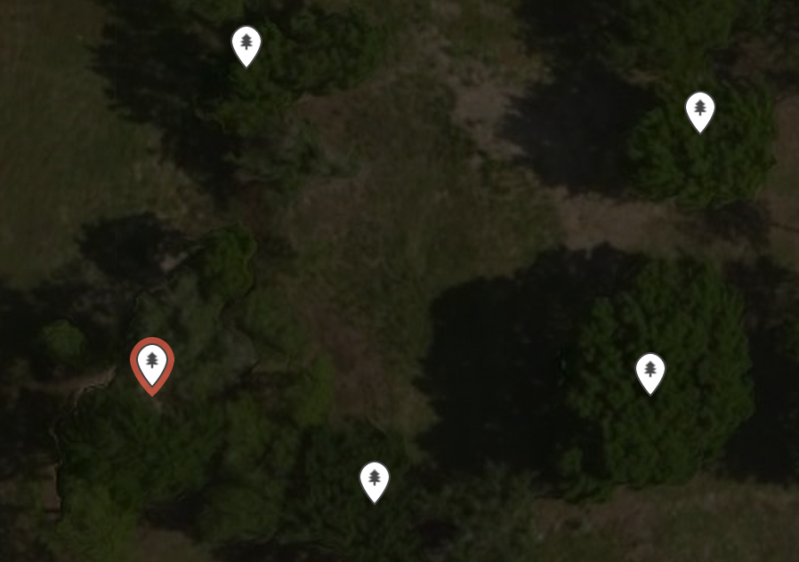 Points
Stored as:
X, Y
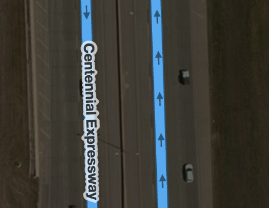 Lines
Stored as:
Array of Xs, Ys
Lines have a direction.
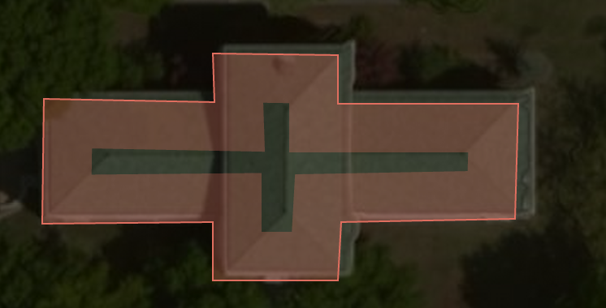 Polygons
Stored as:
Array of Xs, Ys
or an:
Array of Arrays of Xs, Ys
Polygons are:
Implicity Closed:
Explicitly Closed:
Closing Type Depends on Data Format and System
Closing is common bug when importing data into a system
Winding order is the direction the path travels
Is determined by Curve Orientation
Positive Curve Orientation is Counter Clockwise UNLESS your positive Y-axis is downward, then it is Clockwise
Negative Curve Orientation is Clockwise UNLESS your positive Y-axis is downward, then it is Counter Clockwise.
Polygons can have holes!
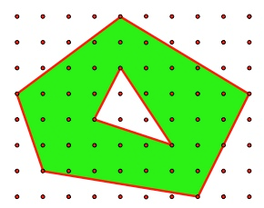
Holes are determined by Counting Curve Orientations!
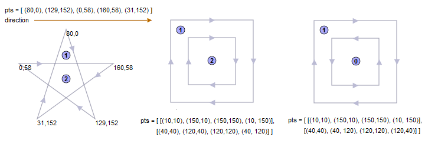
Ways of Determining Where a Polygon Fills:
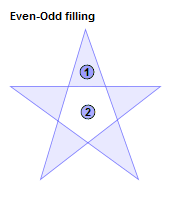 Even Odd
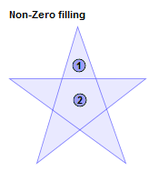 Non Zero
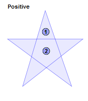 Positive
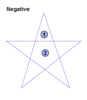 Negative Fill
Invalid Polygons:
Multi-points, Multi-lines, Multi-polygons are collections of their base type all tagged with the same data
Most of the problems with rendering have something to do with the problems described above. Typically in your data.
How do we find, our data? Spatial Indexes.
Step 1: Find Envelope of Geometry
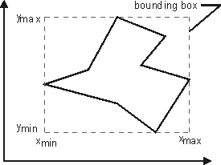
Step 2: Make a Tree Structure
How? Organize the tree by making envelopes of your envelopes.
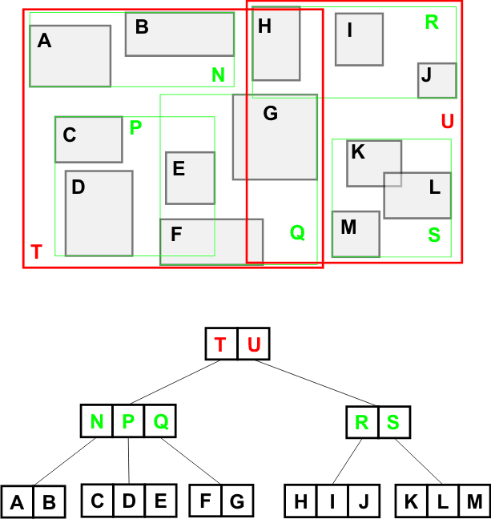
"Blake, I have a spatial index, but its still slow!"
Once you narrow down to a section of a tree, you still must iterate through EVERY point. Including every point in your line or polygon.
Likely Causes that you are slow.
Far too detailed polygons. Taking forever to find intersections.
Including polygons with tons of holes!
Lots of polygons that overlap. Cause Big Tree Branches.
Multipolygon, multilines, or multipoints! They have 1 envelope!
You have too much data! Break out your geometry data first by some other metric (often time or space).
Breaking out data into different space is the magic of Vector Tiles.
Expect Gotchas!
Don't expect one solution to solve everything for you.
Breaking out detailed data into Vector Tiles might make display easier, but may not solve your Nearest Neighbor problem.
Final Thought - Stop doing this: